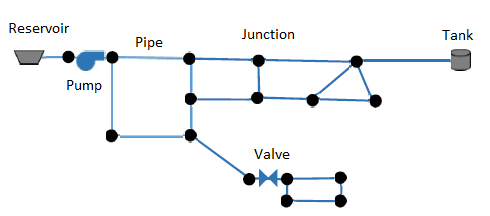

Industry-Standard Software for Modeling Hydraulic and Water Quality Behavior of Water Distribution Systems

Model steady-state and extended period simulations of water flow, pressure, and tank levels.
Analyze the fate and transport of chemical constituents and trace the source of contamination.
Programmatic access to EPANET's engine for custom applications in C/C++.
Model complex water distribution networks with pumps, valves, tanks, and pipes.
Evaluate system performance under various operating conditions and demand patterns.
Community-driven development with contributions from researchers and practitioners worldwide.
EPANET is an industry-standard program for modeling the hydraulic and water quality behavior of water distribution system pipe networks. Originally developed by the U.S. Environmental Protection Agency (USEPA), it is now maintained by the Open Water Analytics (OWA) community.
The EPANET Programmer's Toolkit is a library of functions (or API) written in C that allows programmers to customize the use of EPANET's solution engine for their own applications.
Learn More// C Example - Simple EPANET Analysis
#include
int main() {
EN_Project ph;
EN_createproject(&ph);
EN_open(ph, "network.inp", "network.rpt", "network.out");
EN_solveH(ph); // Run hydraulic analysis
EN_solveQ(ph); // Run water quality analysis
EN_report(ph); // Generate report
EN_deleteproject(ph);
return 0;
} Use the Toolkit API to integrate EPANET into your applications. See the Documentation for more details.
Contribute to EPANET development, report issues, or get help from the community.